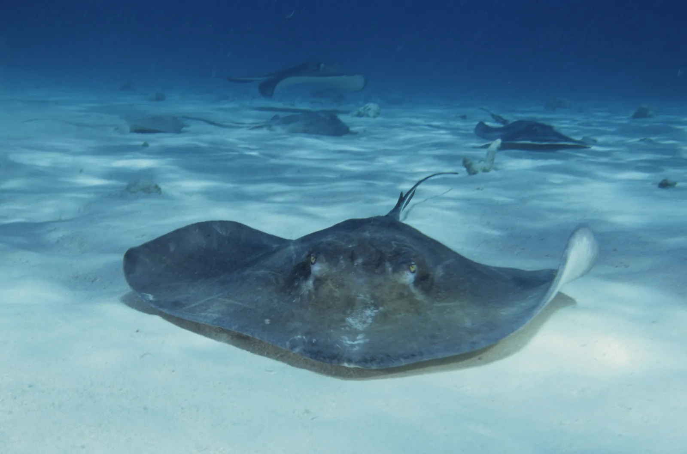

Stingray City
Grand Caïman, Îles Caïmans · snorkeling

Banc de sable au milieu du North Sound où se rassemblent des dizaines de raies pastenagues. Une expérience unique en eau peu profonde.
- Lieu
- Grand Caïman, Îles Caïmans
- Niveau
- Débutant
- Activités
- snorkeling
- Type d'eau
- Mer / océan
- Coordonnées
- 19.38, -81.30 (position approximative du secteur)
Dangers à connaître
- Raies : ne pas les saisir.
- Soleil : mets une crème solaire adaptée aux récifs bien avant d’entrer dans l’eau.
Le conseil d'Ocean Buddy
Traîne les pieds et suis les consignes du guide : les raies sont sauvages.
Ouvrir dans Ocean Buddy Télécharger sur l'App Store
Source : Fiche Ocean Buddy · septembre 2026 · à vérifier localement.